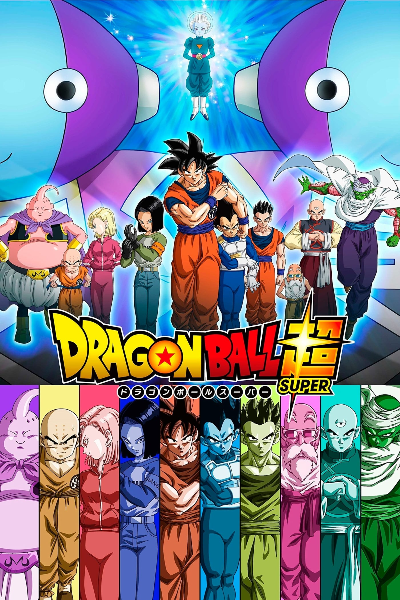
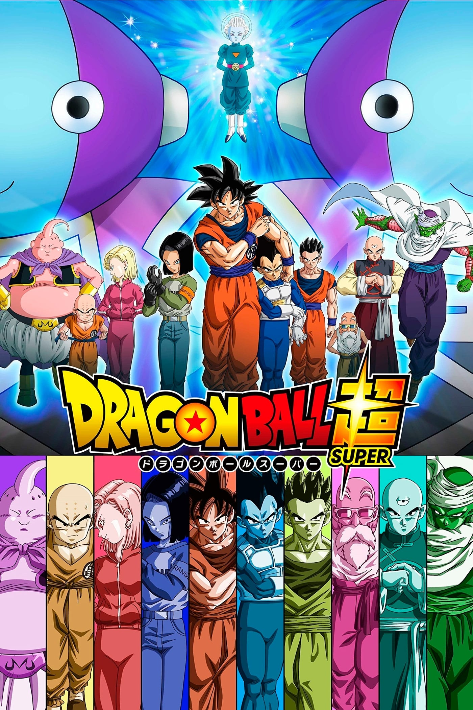

The following content will be introducing each anime from its name, date of production,
author, origin, when did I watch it, why do I like it, recommendations level 1-5
To be honest, I wasn’t a big fan of jojo when it first came out. Back in 2012,
most anime characters were designed to look more skinny and young, a very standard
Japanese high school appearance, but JOJO decided to take the opposite approach by
creating these big muscular dudes from England. As most of the scenes in season one
and two were set in the western countries, most viewers were not intrigued by the
setting, and it feels odd seeing English people speaking Japanese. In addition,
JOJO is considered to have one of the most iconic art styles in anime history.
There are a lot of unnecessary lines on character’s faces, giving them an angular
feeling instead of smoothness.
Many people I know didn’t watch JOJO due to its over
exaggerated art style. However, things changed when Season three, Stardust crusaders
came out. The idea of transforming super powers into stands and portraying the mind
game in between characters utilizing their own powers was a phenomenon. Each battle
in the show really shows how everyone is using their creative thinking to outsmart
the enemy, instead of winning with brute force. Furthermore, there are a lot of
characters in the series, across 6 seasons, but the show does a really good job
developing each character to the point where most of them can feel very remarkable
after you're done watching the show.
Death Note is probably the most iconic anime for mind games. The two main characters
are actually demonstrating extra levels of wisdom and intelligence, using very limited
information trying to fake each other and bait the truth out of their mouths. The first
time I watched Death Note was not until 2021, 15 years after the anime came out. Everyone
around me has recommended this show to me, but I never had the motivation to watch it,
because I have seen recaps and commentary over the movie version of it, and I found the
movie version to be very garbage. Therefore, I assumed the anime would be something fairly
similar, but I was wrong. This is where the advantages of anime become significant.
By using colors and scenes that are impossible to remake in a real person movie, the anime makes the
battle between the two protagonists very intense,and with the emotion expressed in anime,
many scenes were not awkward as they were in the movie. Many recent animes, when they are
trying to describe a battle of wits between characters, it made it so obvious what the
characters were aiming for, which leaves no surprise for the audience, but Death Note
does it really good job of foreshadowing, but not revealing what the protagonist was
truing animation for, tricking both the audience and the characters in the show. There
are also many scenes in the anime that have metaphorical meaning to it, using paintings
and symbolism, it provides an extra artistic layer to a very brutal and serious crime.
I feel like this is probably one of the most iconic or classic anime of all time. Naruto
is a long series of anime making stories of ninjas progressing, learning, while protecting each
other’s loved ones. The plot of Naruto is absolutely outstanding, but the way they put the content
in the show made it very annoying to watch. It is understandable for the show to contain memory
episodes when the series becomes very long, and to remind some foreshadowing established in the
beginning, but the fact that they do memory episodes in the middle of the fight for over 3-5
episodes straight makes it very annoying to watch. Out of 720 episodes, I can confidently say
that at least 200-250 episodes are not contributing to the actual plot.
However, the good parts
of the show are fire, especially when characters get into action, and the protagonist is constantly
outperforming the expectations of everyone, it still gives me goosebumps. The animation style in the
fighting scenes are especially fluid and smooth, and the way the characters are fighting with mind
gaming and wisdom really does show the traits of being a ninja, and outsmarting your opponents.
The main character himself, as he goes through the difficulties and conflicts throughout the show,
we can see a dramatic growth in character in both mind and strength, while looking back at the
beginning, thinking, what a long way we have gone through.
One Punch Man to me was a very surprising series. At first when I heard about it, I thought
it was going to be quite boring to watch, because the protagonist is already at peak strength
in the show since episode one. The reason why the series is called One Punch Man is because the
man literally defeats everyone with only one punch. Under such circumstances, how would the series
become interesting? This is where I really find the author, ONE, did a really good job handling the
plot with character development from side characters.
This entire story is essentially told from the
main character’s point of view, where it is showing how other characters are growing along the way,
how they might be influenced by the main character. This is not something easy to do, because the
author is attempting to give other characters more screen time, since he knows the moment the protagonist
shows up the fight is over, while also trying to maintain the significance of the main character while
hanging with others. In addition, the animation of the fighting scenes in the first season was top tier,
I still remember screaming in amazement at the final battle on the last episode.
Overlord has a very similar genre to One Punch Man, where the protagonist doesn’t go through any
competition from the very beginning. However, this entire series is a slow demonstration of how powerful
is the main character along with his force and henchmans. Overall, the story is told in a very good pace,
where the audience wouldn’t feel bored, but also maintaining a quite detailed and progression in plot. In
addition, I really like watching game related genres. In this case, the game yggdrasil is quite matching
my expectation in a mid century themed video game.
The characteristics of the main character is also very
different from a generic isekai protagonist, the fact that he is an undead, the way they describe his
feelings towards human beings is very successful. Furthermore, from the audience’s perspective, we all
know that the main character is unbeatable in this story, but the way he is so cautious about doing
everything makes the story very entertaining. The amount of work the author puts into plot development
is very satisfying. With the power that the main character possesses, he can quite literally wipe out
the world with very little effort, but the way they put mind games under each invasion makes the story a
lot more interesting.
Assassination Classroom was the first, and probably the anime that influenced my emotions the most.
The story had a very goofy start where an entire middle class was trying to kill their teacher or else
the earth would get blown up. It sounded so stupid to me at first, but it was recommended by so many
people around, so I had to check it out. To be honest, I really enjoyed the art style of this series,
and it made every single individual in the class visible to me. At the end of the series I can easily
remember and recognize everyone. Another big factor in the show is the character development, everyone
in the class has their own development in their hobby.
The show does a really good job at foreshadowing,
where much information was introduced in the beginning to the point where you don’t think of it as much,
but when it was mentioned in the end, you would have a feeling that everything rounded up. Finally, the
very end scene when they finally succeeded in their goal, something they wanted to do for the past school
year, but at the very end, nobody wanted to do it , but had to. I cried really hard at the end.
Kuroko no basket means a lot to me. This is the anime that I have rewatched the most to the point I
remember exactly what happens in every episode, some good ones even each character line, but I don’t
really get bored even if I watched it for more than 20 times. This show really influenced me by a lot of
things. As this is an anime about basketball, I started to actually play basketball in real life. This got
me a lot of new friends that also play basketball, it was a very good time. In addition, my profile picture
on pretty much every social media platform is one of the characters in the show. Another big factor in this
show is friendship.
I watched this show during the beginning of high school, which is when I departed with
my friends in elementary school. This really made the connection with the show. Trying to regain the lost
friendship, while making new friends was definitely a big challenge for me at the time. This show for many
people may be compared to slam dunk, which is probably objectively the best basketball anime. If I were to
watch this show again at this age, I would probably find it really awkward, which is exactly why I am glad
I get to experience what I want to experience at the right time.
Sword Art Online, although it’s not the first anime I watched, it is the anime that got me into watching
more anime. This is the show that turned me into the anime boy I am today. The theme, the art style, the plot,
the character development, everything about the anime was perfect for me. The way that described the games
in the series was very realistic and attractive to me, which is also another reason why I started to play
video games, specifically, MMORPGs. From today’s perspective, SAO is probably not that intriguing to me,
perhaps very cliche, but at the time, for someone who never watched any other anime, this was mind blowing
to me.
This was also the first series that got me waiting every week for a new episode to come out at midnight.
The main character himself was also the person I have been admiring for the past few years, a person that
everyone likes, hangs around him, getting together with their loved ones, everything seemed so perfect and
very different from my experience in real life. I have been working through myself, and trying to get there,
but things don’t work out the same in anime, but I don't regret watching the show, and I am glad that I started
to watch anime because of this show.
Pokemon is THE first anime I have watched in my whole life. I remember watching this on DVD back in kindergarten,
where many of my friends were jealous that I had pokemon to watch. I have loved animals and pets since I was a kid,
but we abandoned a lot of pets during my childhood, and I couldn't really do anything about it. Therefore, when I
saw the idea of being able to hold on to these pets in a ball, I really wished we had such technology in real life,
but the dream never came true. Whenever there is an episode where one of Ash’s pokemon gets left behind, I cry for
at least 20 minutes, because I can understand him.
Similar things happened to me all the time, but it was never my
decision to make, so I always thought Ash was a very strong kid to leave some behind for a greater good. Fun facts,
it wasn’t until high school that I found out he was only 10 when he left his town. Therefore, I am more amazed at
his capability to walk in the middle of forests and was able to live with food that just magically appeared. It was
very clear that the author was trying to avoid any realistic elements, laundry, money, bacteria, etc, making everything
in the show happy and positive as ever, which is another reason why I love watching it, it cheers me up every time.
If Pokemon is the first anime I ever watched, Sword Art Online got me into the hobby, then Dragon Ball is
what made me, me. If it wasn't for Dragon Ball, I wouldn’t be writing this article, making this website, I
wouldn’t be an art student in the beginning. This is arguably the best anime style I have never seen to this
date. The fighting scenes are just incredible, making the tension and mood phenomenon. Every single anime that
involves transformation to gain strength all come from Dragon Ball. The scene of Goku going super saiyan for
the first time is still one of the most iconic scenes in anime history. In the past I have made countless
drawings of Dragon Ball, played many Dragon Ball games, following dozens of Dragon Ball content craters, and
attempted voice acting because of Dragon Ball.
Every anime that you may think of cliche today, all come from
Dragon Ball. This is the anime that created all the fighting anime. Not only does it succeed in animation, but
the plot is also very outstanding. The way Toriyama handles each sag, manipulating the feelings of audiences,
making the appearance of each character at the exact right moments hyping up everyone watching the show. This
show essentially made everyone related to it famous, all the voice actors, all the content creators, streamers,
anything done that is related to Dragon Ball is valuable. Unfortainly, the author of Dragon Ball, Akira Toriyama
passed away this year. I shall remember everything he has given to me as a person, as an anime fan, and making me special.


 
